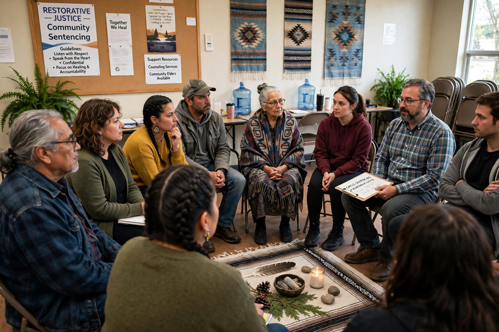

Aboriginal justice refers to the justice systems, legal traditions, and reform initiatives of Indigenous (Aboriginal) peoples, particularly in Australia and Canada, and to efforts to address the over-representation of Indigenous people in criminal justice systems.

Colonisation displaced Indigenous legal orders and imposed settler law. In Australia, the 1991 Royal Commission into Aboriginal Deaths in Custody documented high rates of Indigenous imprisonment and deaths in custody. In Canada, inquiries and the Supreme Court's Gladue decision (1999) directed courts to consider the circumstances of Indigenous offenders and alternatives to imprisonment.
Initiatives include circle sentencing, Indigenous courts such as Australia's Koori Court and Canada's Gladue courts, community justice panels, healing lodges, and restorative programmes drawing on Indigenous traditions of consensus, restitution, and reintegration — themes shared with restorative justice.